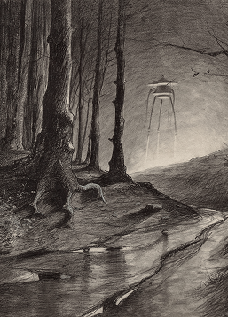
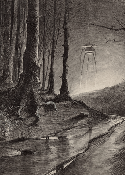
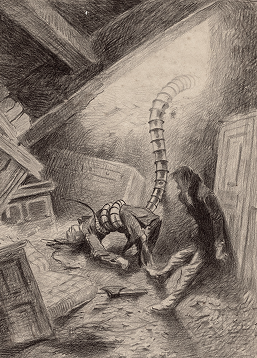
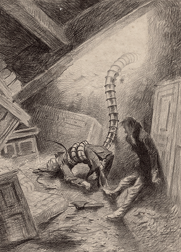
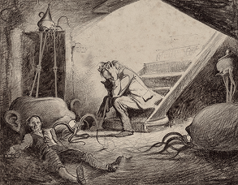
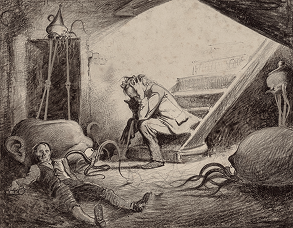
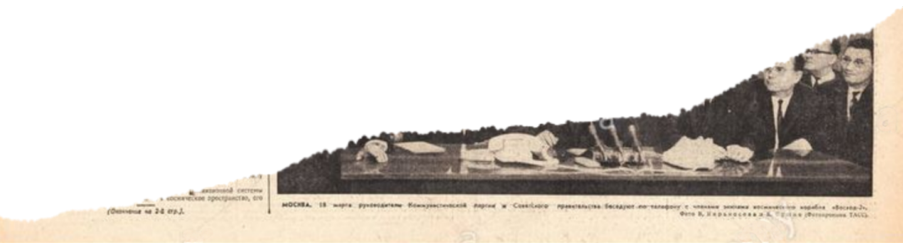
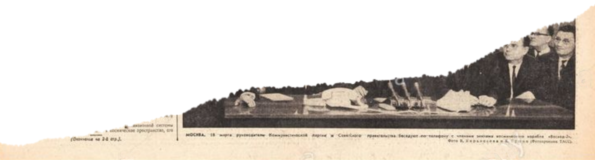

Когда-то люди представляли космос миром грёз и мифов. Луна казалась сияющим диском, Марс —
таинственной красной звездой, а далёкие планеты — обителями богов. Космос жил в воображении
поэтов и художников, как бескрайнее и прекрасное пространство.
Реальность оказалась иной, но не менее удивительной. Земля из орбиты предстала хрупкой
голубой сферой с тонкой атмосферой. Луна — суровый безжизненный шар с кратерами и пылью.
Марс — красная пустыня с горами и каньонами. Юпитер, Сатурн, Уран и Нептун открылись как
гиганты со штормами, кольцами и ледяными просторами. Звёзды и галактики, показанные
телескопами, превратились из мерцающих точек в целые миры и скопления миров. Космос оказался
тёмным, холодным и почти пустым — но наполненным миллиардами объектов и тайн.
Первые полёты в космос изменили взгляд людей на мир. Они показали, что Земля — это маленькая
голубая планета среди бескрайней тьмы, единый дом для всего человечества. Для жителей СССР и
всего мира это стало потрясением: привычное оказалось огромным и хрупким, а далёкие мечты —
достижимыми.
Космос открыл новые горизонты науки: люди впервые увидели Землю из орбиты, смогли изучать её
атмосферу, солнечную радиацию, невесомость. Началась эра спутниковой связи, прогнозов погоды
и глобальных наблюдений. То, что ещё недавно казалось фантастикой, вошло в повседневную
жизнь.
Но главное открытие было иным: человек понял, что способен покинуть свою планету. Это стало
символом веры в будущее, доказательством силы разума и труда. Космос научил видеть
человечество как единое целое и подарил надежду: дорога к звёздам действительно открыта.


 


 

 



 
